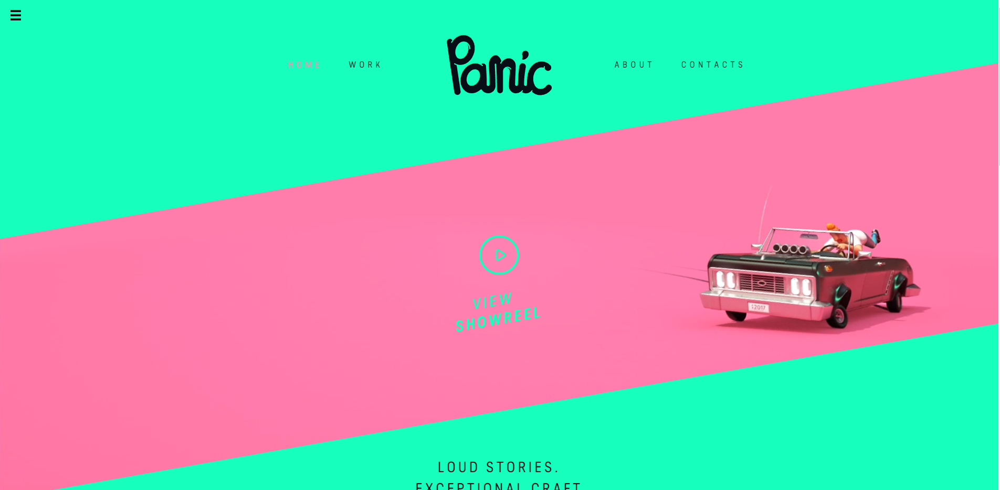
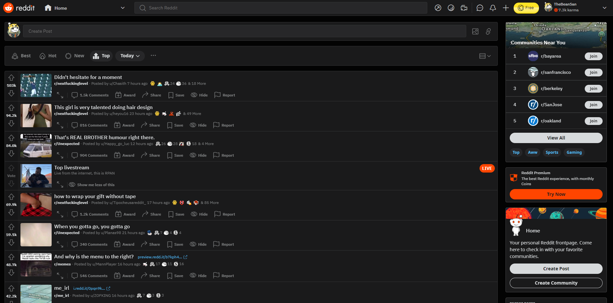
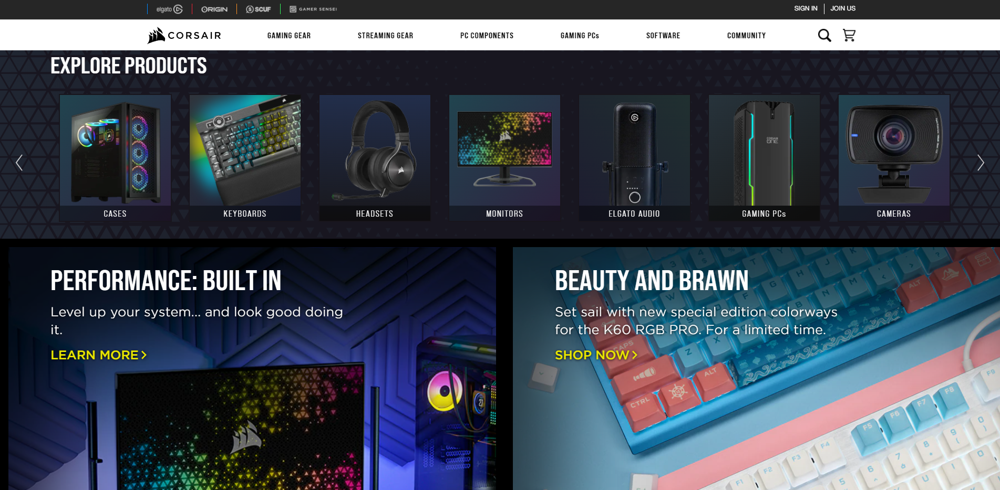
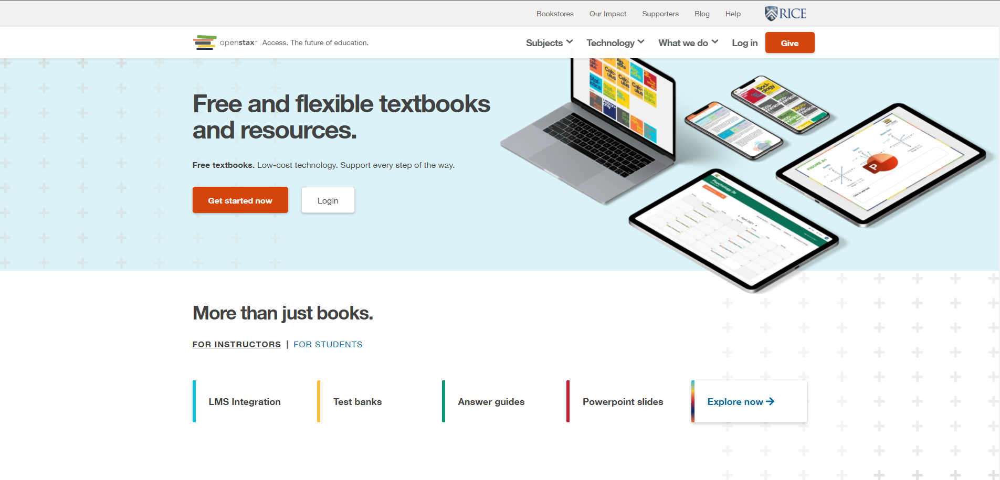

Design Principles
Contrast: Panic Studio

- Panic Studio's website effectively draws in the attention of newcomers with their energetic and contrasting color palette.
- Their logo, which is quite rounded and unrestricted also offers a stark contrast to their slim and minimalistic font that occupies the rest of the page.
Repitition: Reddit

- Reddit's website incorporates a lot of repitition in the form of rows upon rows of tiles that display the various content uploaded by users.
- There is a similar layout for the different subreddits in the "Top Aww Communities" section.
Alignment: Corsair

- Corsair's website displays their products in evenly aligned boxes that not only provide visual satisfaction, but also ensure easy viewing of the different item categories.
- The two large boxes, which are evenly spaced in between, also provide an area of focus for visitors to see the different features of their products.
Proximity: Open Stax

- Open Stax's website is very clean and easy to look at.
- Its minimal layout makes the interface quite intuitive to manuver.